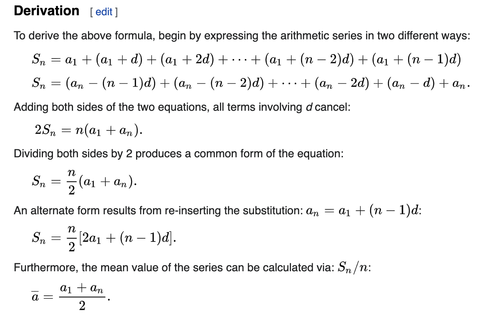
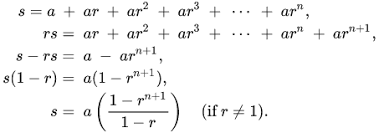

Number Theory
Modular multiplicative inverse:
(A/B) % m != A%m / B%m (not equal) (A*B) % m = A%m * B%m (equal)
(A/B) => A * B^-1 (A/B) % m = (A * B^-1) %m
We need to find B^-1 i.e. modular multiplicative inverse
Fermet's little theorem : ( A ^ m-1 ) %m = 1 where m=prime, A is not multiple of m If you take mod m of A ^ m-1, then remainder will always be 1. Multiply by A^-1 on both sides ( A ^ m-2 ) % m = A ^ -1
So, modular multiplicative inverse of A i.e. A^-1 = A^m-2 Use binary exponentiation to calculate pow(A, m-2) as m is 1e9+7
Binary Exponentiation
Binary exponentiation is used if
int binexp(int a, int b, int m)
{
int result=1;
while(b>0) {
if(b&1) { // odd number
result = (result * 1LL * a) % m;
}
a = ( a * 1LL * a ) % m;
b >> 1;
}
return result;
}
Check if prime
bool isPrime(int n) {
if(n==1) return false;
//Need to check till sqrt(n) since after sqrt we will get same pairs reversed
for(int i=2; i*i<=n; i++ ) {
if(n%i==0) return false;
}
return true;
}
Find gcd
int gcd(int a, int b)
{
return b == 0 ? a : gcd(b, a % b);
}
Arithmetic Progressions
A sequence of numbers is called an arithmetic progression if the difference between any two consecutive terms is always same. In simple terms, it means that next number in the series is calculated by adding a fixed number to the previous number in the series. This fixed number is called the common difference. For example, 2,4,6,8,10 is an AP because difference between any two consecutive terms in the series (common difference) is same (4 – 2 = 6 – 4 = 8 – 6 = 10 – 8 = 2).

If ‘a’ is the first term and ‘d’ is the common difference, nth term of an AP = a + (n-1) d Arithmetic Mean = Sum of all terms in the AP / Number of terms in the AP Sum of ‘n’ terms of an AP = 0.5 n (first term + last term) = 0.5 n [ 2a + (n-1) d ]
Sum of all numbers from 1 to N Sum(N) = N * (N+1) / 2
Geometric Progressions
A sequence of numbers is called a geometric progression if the ratio of any two consecutive terms is always same. In simple terms, it means that next number in the series is calculated by multiplying a fixed number to the previous number in the series. This fixed number is called the common ratio. For example, 2,4,8,16 is a GP because ratio of any two consecutive terms in the series (common difference) is same (4 / 2 = 8 / 4 = 16 / 8 = 2).

If ‘a’ is the first term and ‘r’ is the common ratio, nth term of a GP = a rn-1 Geometric Mean = nth root of product of n terms in the GP Sum of ‘n’ terms of a GP (r < 1) = [a (1 – rn)] / [1 – r] Sum of ‘n’ terms of a GP (r > 1) = [a (rn – 1)] / [r – 1] Sum of infinite terms of a GP (r < 1) = (a) / (1 – r)
Catalan Numbers
Cn = C0Cn-1 + C1Cn-2 + C2Cn-3 (2n)! / ((n + 1)!n!)